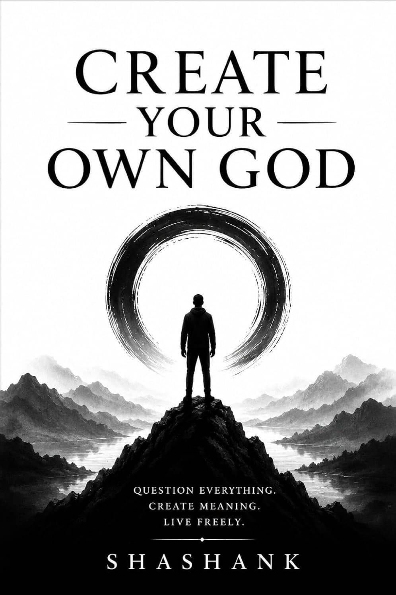
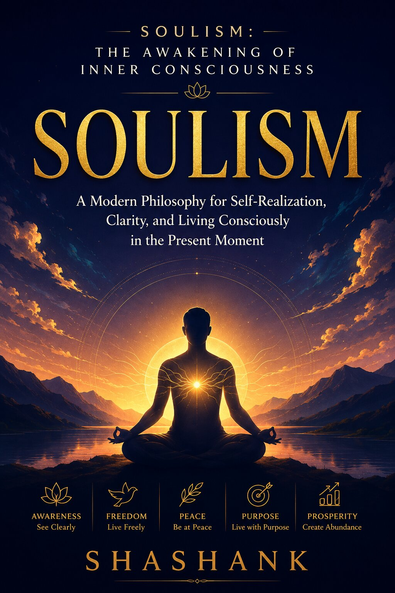
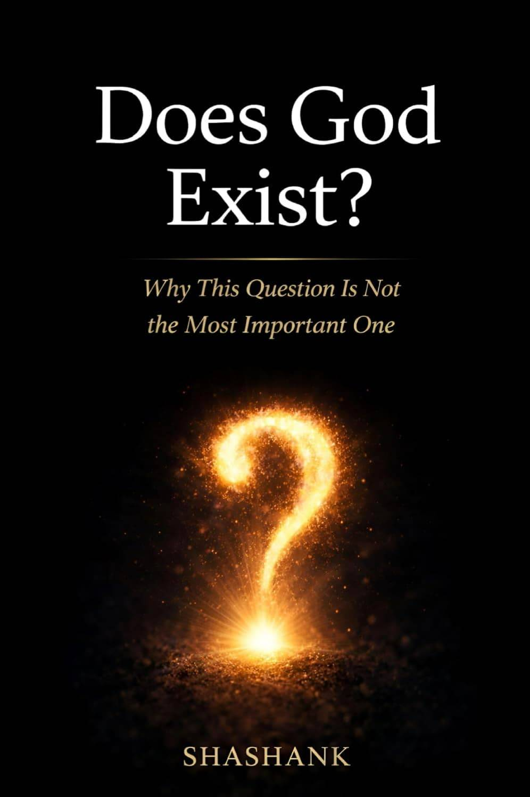
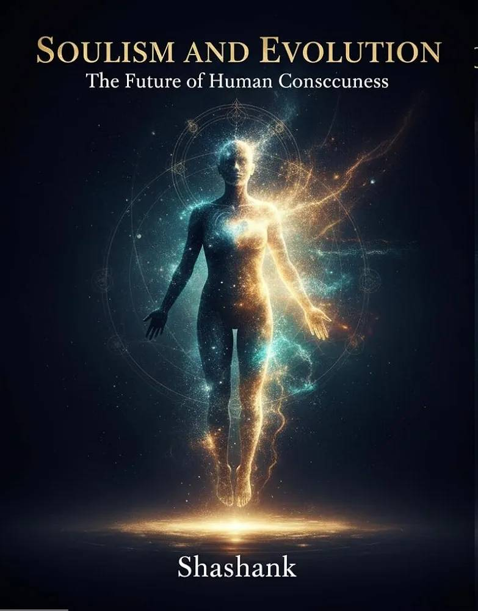
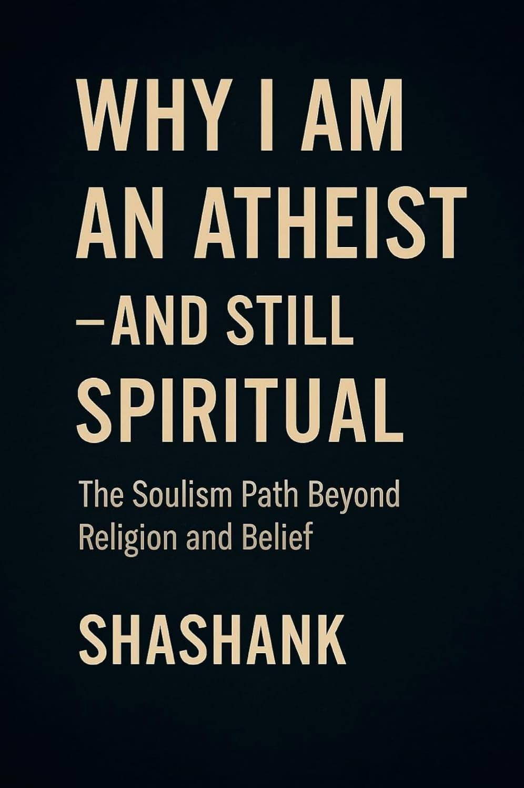
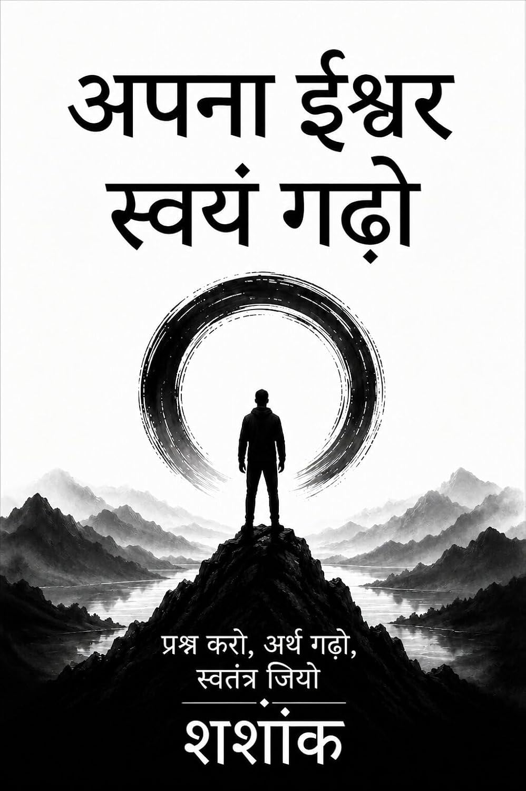
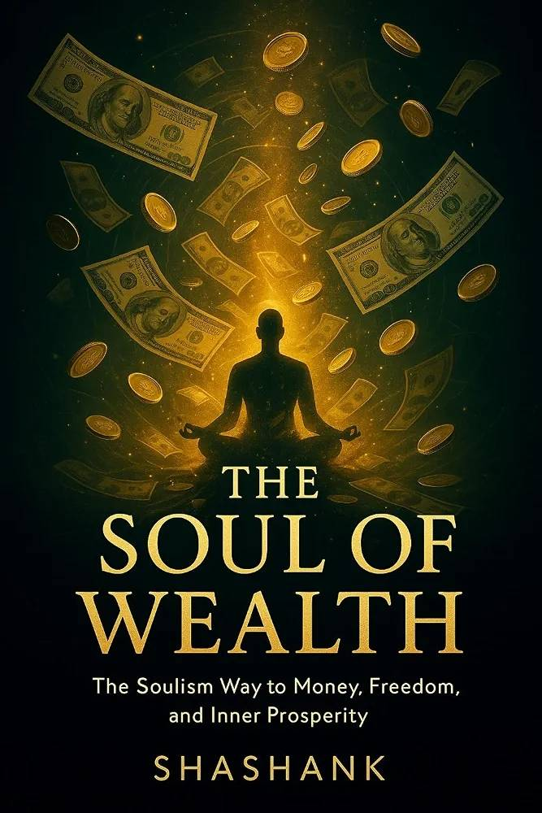
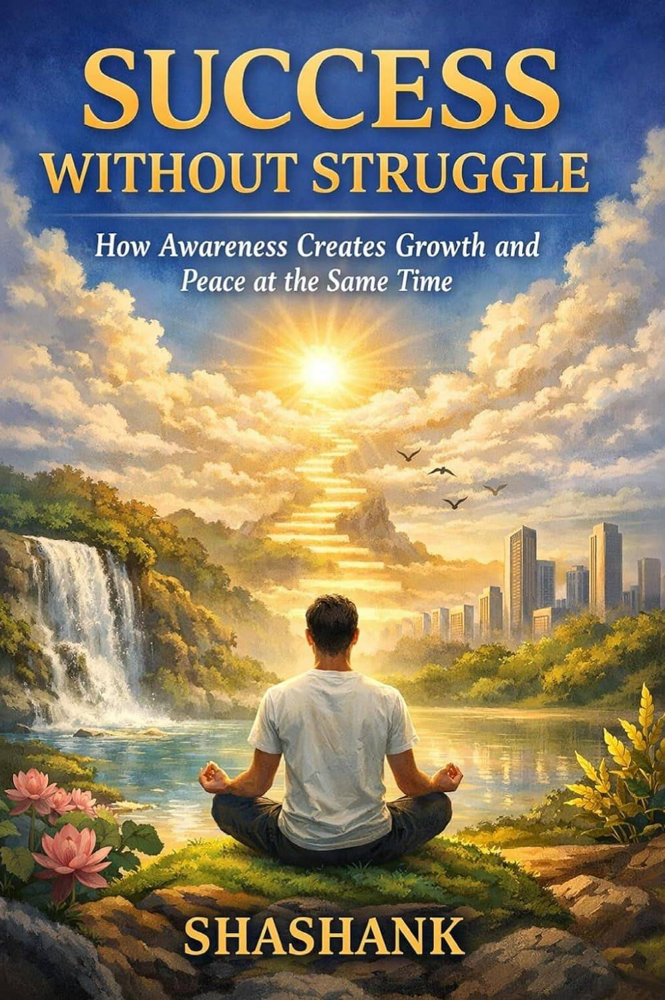
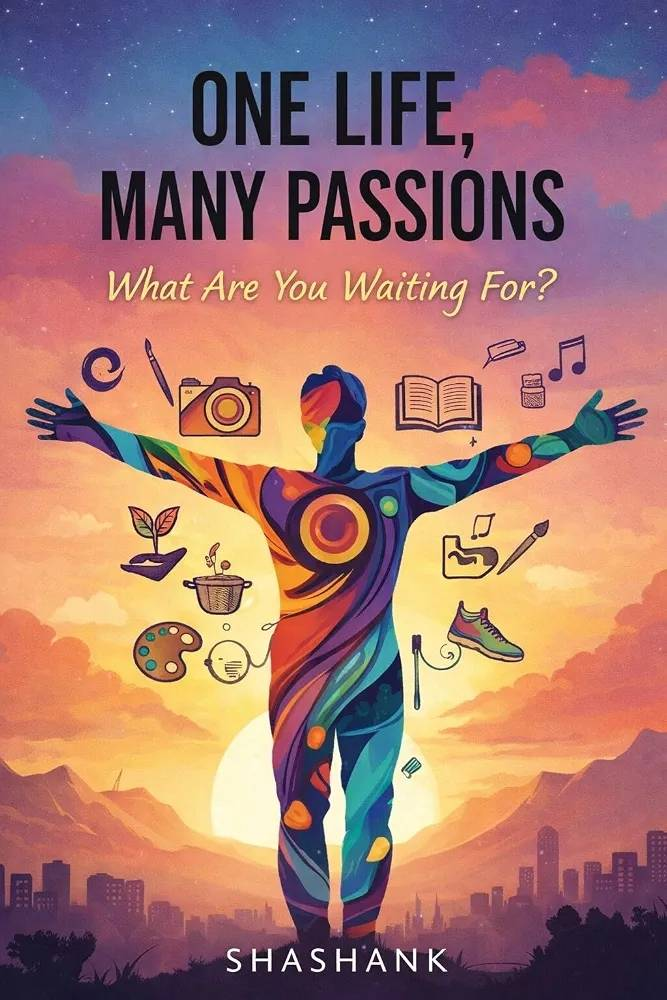
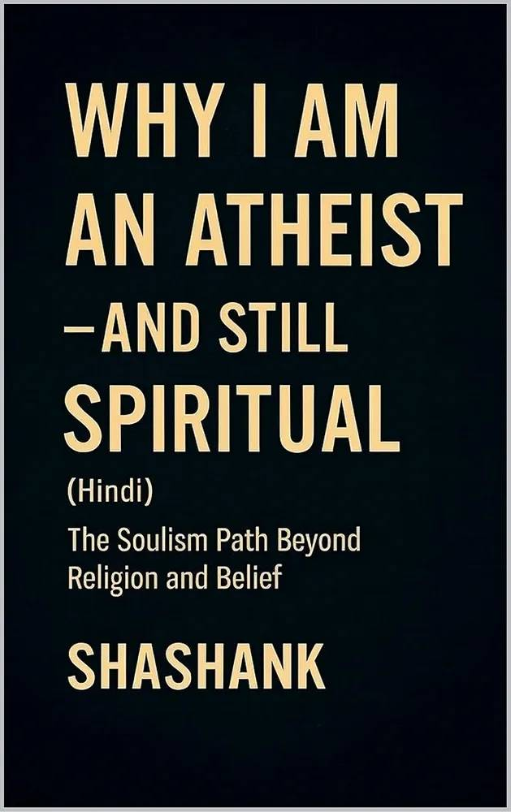

Each one takes a single Soulism idea and walks all the way through it. Start wherever pulls at you most.
See All Books on Amazon →The foundational ideas — consciousness, belief, and what it means to build your own.

Every belief you've ever held was, at some point, created by someone. Question everything you inherited about God, truth, and meaning — and build a belief system that's finally, actually yours. The foundational Soulism text, and the place to start.
Read on Amazon →
What does it actually feel like to be fully awake inside your own life? A modern philosophy for self-realization, clarity, and living consciously in the present moment — not someday, now.
Read on Amazon →
The question everyone argues about — and the reason it might be the wrong question to spend your life on. A sharp, honest look at why this question is not the most important one, and what to ask instead.
Read on Amazon →
Consciousness itself is still evolving — and so is the way humanity understands it. A look at the future of human consciousness, and where this philosophy points next.
Read on Amazon →
Disbelief and a rich inner life are not opposites — most people have just never been shown how they coexist. The Soulism path beyond religion and belief.
Read on Amazon →Also in Hindi

वही foundational Soulism किताब, अब पूरी तरह हिंदी में — भारतीय संदर्भ और सरल भाषा के साथ। सवाल पूछो, अर्थ गढ़ो, स्वतंत्र जियो।
Read on Amazon →What ambition and prosperity look like when they're built on awareness instead of anxiety.

Most people chase money by abandoning themselves along the way. The Soulism way to money, freedom, and inner prosperity — wealth that doesn't cost you your own awareness to get.
Read on Amazon →
What if growth and peace were never actually opposites? How awareness creates both at the same time — success that doesn't require burning out to reach.
Read on Amazon →Not another list of resolutions you'll abandon by February. The Soulism way to clarity, growth, and inner stability — a practical, honest companion for the year ahead.
Read on Amazon →Fear, obligation, and the quiet ways we shrink our own lives — examined honestly.
Fear can teach a child not to touch fire. It should never be trusted to run an adult's entire life. A close, unflinching look at what fear actually does to us — and what's left once it's finally examined instead of obeyed.
Read on Amazon →How much of what feels like "just how things are" was actually built, deliberately, to be obeyed? Beyond obedience, fear, and moral conditioning — an honest look at what's inherited and what's genuinely chosen.
Read on Amazon →
You get one life and an impossible number of things that could interest you in it. What are you waiting for? A case for living more of your life on purpose, not just the parts that feel safe.
Read on Amazon →Soulism was never meant to stay in one language.

The Soulism path beyond religion and belief, in Hindi.
Read on Amazon →El camino de Soulism más allá de la religión y las creencias.
Read on Amazon →Start with Create Your Own God — it's the foundation everything else builds on.
Get Create Your Own God →